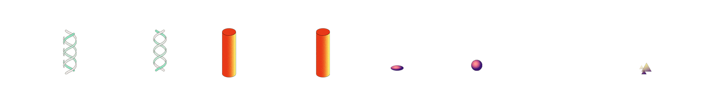
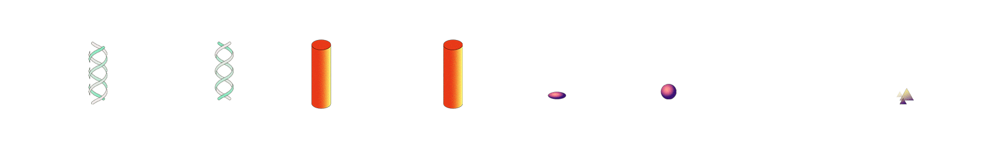
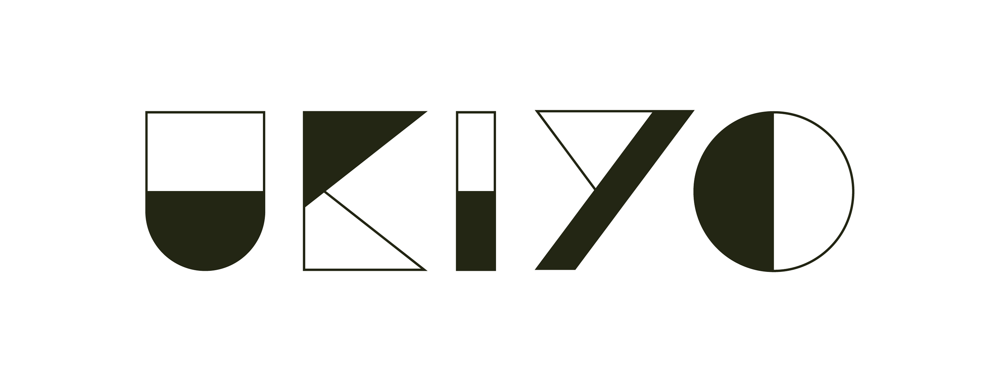
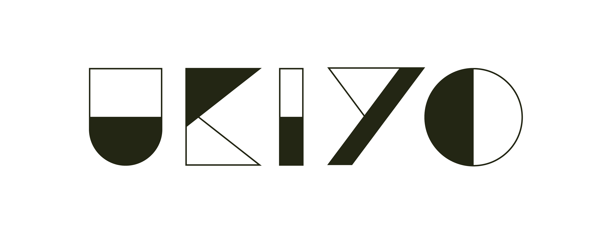

UKIYO will lead you to an experimental experience of shapes and sounds based on your emotions — Combine music and image and embark on the journey of your heart.
UKIYO is an image and sound experience with scenarios that are constructed by semiotic elements. It consists of a blank canva in which the user adds graphic elements that triggers sound and visual responses, creating an associative atmosphere with the purpose of arouse emotions.
Its aesthetics and naming was inspired by ukiyo-e, a Japanese art movement which name means “picture of the floating world”, that matches with the app's abstractionism. The elements' colors are low saturated and grainy in order to refer to ukiyo-e artworks.
Four positive emotions were considered to create the elements and sounds: relaxation, enthusiasm, pleasure and euphoria, based on a research of shape, colors and sounds psychology. The app's goal is to explore creativity, emotions and non-verbal communication, using semiotic associations in an experience that music and image walks together, generating an effect that is called “weak synesthesia”.
The app was available on TestFlight for three months. It was developed by Beatriz da Silva, Caroline Viana, Gustavo Yamauchi and Nariel Arthur, at Apple Developer Academy | Senac. You can check more content on Instagram and BandLab pages.
UKIYO
üáßüá∑ UKIYO vai te guiar por uma experi√™ncia experimental de formas e sons baseadas nas suas emo√ß√µes ‚Äî Combine m√∫sica e imagem e embarque na jornada do seu cora√ß√£o.
UKIYO é uma experiência de imagem e som com cenários que são construídos por elementos semióticos. Consiste em um quadro em branco onde o usuário adiciona elementos gráficos que desencadeiam respostas sonoras e visuais, criando uma atmosfera de associação com o intuito de gerar emoções.
Sua estética e nome foi inspirado pelo ukiyo-e, um movimento artístico japonês cujo nome significa “foto do mundo flutuante”, que condiz com o abstracionismo do aplicativo. As cores dos elementos são pouco saturadas e têm efeito granulado, a fim de remeter às obras de ukiyo-e.
Foram consideradas quatro emoções positivas para criar os elementos e sons: relaxamento, entusiasmo, prazer e euforia, com base em uma pesquisa acerca da psicologia das cores, formas e sons. O objetivo do aplicativo é de explorar criatividade, emoções e comunicação não verbal, usando associações semióticas em uma experiência onde música e imagem caminham juntas, gerando um efeito chamado de “sinestesia fraca”.
O aplicativo ficou disponível para teste no TestFlight por três meses. Foi desenvolvido por Beatriz da Silva, Caroline Viana, Gustavo Yamauchi e Nariel Arthur, na Apple Developer Academy | Senac. Você pode conferir mais conteúdos nas páginas do Instagram e BandLab.
DECEMBER, 2020.
 


 
